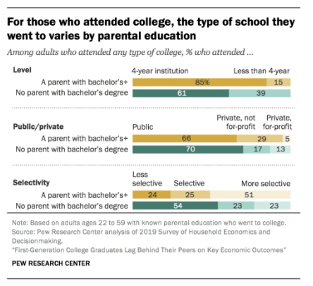
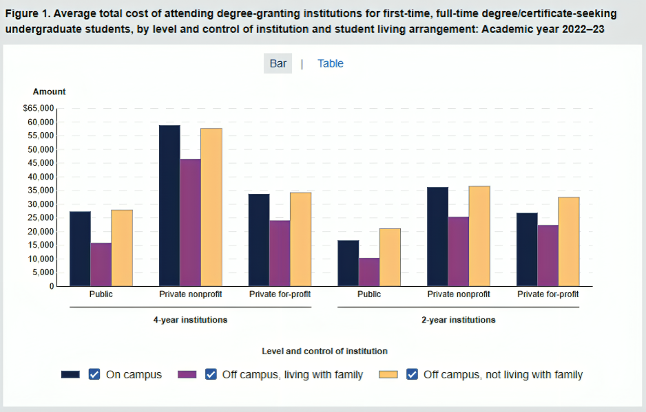
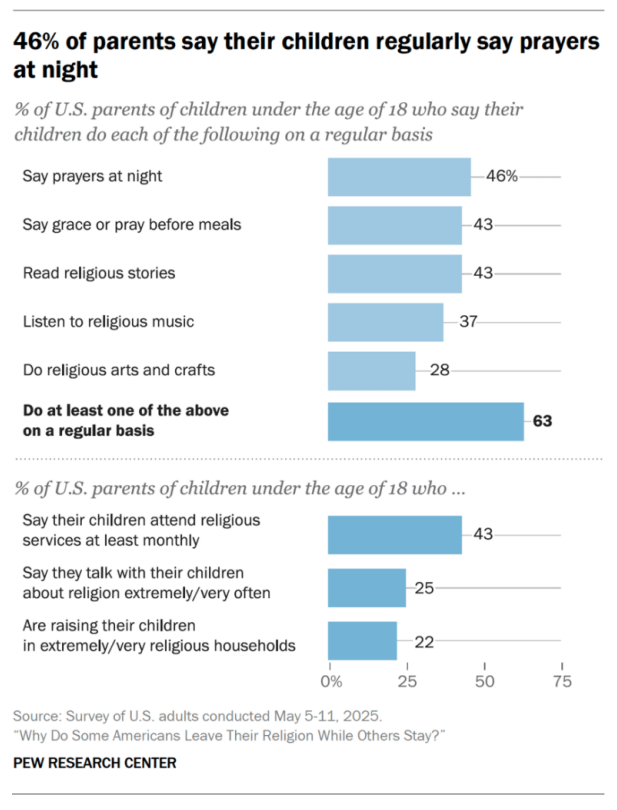
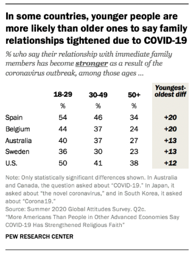
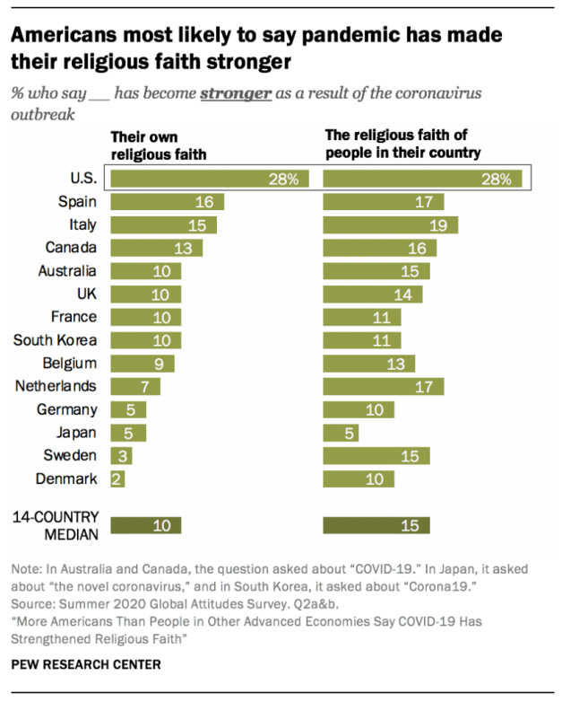
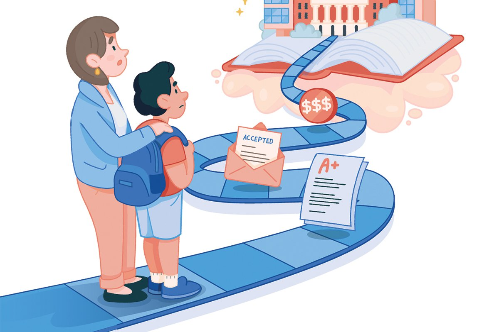
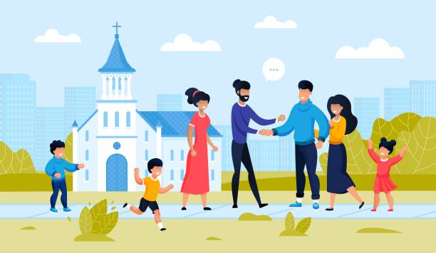

Social Institutions Shape Who Gets
Opportunity and Who Faces Barriers
Family, education, economy, and religion are interconnected.
They share resources, credentials, networks, expectations, and social power.
Family
Establishes the starting point through cultural traditions, wealth, expectations, and socialization.
Education & Economy
Categorizes individuals into various pathways and credentials that influence their life opportunities.
Religion
Influences material security, personal identity, sense of belonging, and social boundaries.
The Boundaries Countless Face
The "Invisible" Inequality in Your Life
Institutions Distribute
The availability and delivery of support, opportunities, resources, mentorship, and protection are shaped by social patterns and dynamics, rather than occurring by chance. These elements are intricately connected to the societal structures, relationships, and norms that influence who receives assistance and who has access to opportunities.
Stratification Dimensions
The interplay of class, race/ethnicity, and gender creates complex advantages and disadvantages in society. Socioeconomic status influences access to education and jobs, while racial and ethnic backgrounds shape societal perceptions. Gender roles further complicate these dynamics, leading to varying degrees of privilege and oppression, emphasizing the need to understand their intersections in people's lives..
Class
Wealth determines school district quality, access to tutoring, and whether a family can absorb financial shocks without pulling a student out of school.
- Wealthy families pass on asset buffers — savings, investments, home equity — that cushion risk.
- Lower-income students experience increased pressure to drop out, have access to fewer advanced course offerings, and receive less guidance for college preparation.
- Class position is influenced by previous generations; each generation's starting point is shaped by the one before it.
Race / Ethnicity
Historical and ongoing policy choices created structural disparities that persist independently of individual effort or values.
- The median wealth gap between white and black families is approximately eight times greater for the former (Fed 2019).
- Residential segregation concentrates poverty and restricts access to well-funded schools and employment opportunities.
- Institutional bias manifests in rates of discipline, hiring callbacks, and access to credit— all documented by various audit studies.
Gender
Gender plays a significant role in shaping wages, the recognition of diverse roles, and the appreciation of unpaid contributions, influencing career trajectories, access to leadership opportunities, and societal norms in a meaningful way.
- Women earn 80.9 cents for every dollar earned by men (Census 2024, full-time year-round).
- Women primarily handle most unpaid domestic and caregiving responsibilities, which restricts their opportunities for career advancement.
- Women hold ~29% of senior leadership roles in S&P 500 companies (Catalyst 2024).
Home Is Where Advantage Begins or Disadvantage Takes Root
The Starting Line Is Unequal
How Family Influences Opportunities
- Families play a key role in passing down financial resources, building confidence, shaping social expectations, and providing essential knowledge before educational institutions and workplaces take over.
- The level of education that parents attain plays a significant role in shaping their children's academic achievements and significantly impacts their future earning potential.
- When families have access to abundant resources and well-established networks, these advantages can significantly reinforce existing social disparities.
- The structure and stability of a family play a crucial role in shaping children's opportunities and outcomes, thereby influencing both their academic achievements and socio-emotional development.
Bachelor's Attainment
Without a college-educated parent
With a parent who has a Bachelor's degree or higher
Median Income Impact
Without a college-educated parent
With a parent who has a Bachelor's degree or higher

Not Everyone Has Equal Access
Education as A Mobility Gateway, But Not an Equal Ladder
Education's Role in Opportunity
Education can provide skills, credentials, and social networks that open doors to better jobs and higher income.
However, access to quality education is often influenced by socioeconomic background, perpetuating existing inequalities. It's supposed to be a ladder, but for many, it remains a gatekeeper.
How Education Reproduces Inequality
- The affordability of education differs depending on the type of institution and the financial resources of the family.
- The hidden curriculum benefits students who have had prior guidance and connections.
- Bias in expectations and student tracking influences access to opportunities.
Public 4-year average net price
Private nonprofit 4-year average net price

The Economy Only Benefits a Select Few
Income, Wealth, and Risk Are Distributed Unevenly & Disproportionately

Current Income Snapshot (Census 2024)
U.S. real median household income.
Inequality in Economic Outcomes
Economic institutions reward some with high wages, wealth accumulation, and job security, while others face low wages, limited assets, and precarious employment.
These disparities are influenced by factors such as education, race, gender, and family background, creating a cycle of advantage and disadvantage.
- Wealth inequality is even more pronounced, with the top 1% owning a disproportionate share of assets, while many families have little to no wealth.
- Job security and benefits are often tied to higher-paying positions, leaving low-wage workers vulnerable to economic shocks and lacking access to healthcare, retirement savings, and paid leave.
Economic position strongly affects daily life choices, stress levels, educational options, and long-term freedom. It shapes opportunities and constraints in ways that can perpetuate inequality across generations.
It's Time to Pay Attention
Gender Gaps are Undeniably Present Everywhere You Look
Wage gaps persist across both gender and racial lines, revealing significant disparities in earnings. On average, women typically earn less than men, and this gap is even more pronounced for women of color, who often receive lower wages compared to their white male counterparts. Factors contributing to this inequity include systemic discrimination, occupational segregation, and differences in work experience and education access, which collectively create an uneven playing field in the workforce. As a result, many individuals from marginalized groups find themselves earning substantially less, underscoring the need for continued advocacy and policy changes aimed at achieving pay equity. The female-to-male earnings ratio among full-time, year-round workers is 80.9%.


A Relationship with Faith
Belonging, Meaning, and Social Boundaries
Religion is one of the oldest social institutions and has shaped societies throughout human history. It influences social behavior, political systems, cultural practices, moral expectations, and community cohesion. By connecting people through shared beliefs and practices, religion provides individuals with a sense of purpose and belonging.
Why Religion Matters Sociologically
- Common values and spiritual practices can improve well-being and foster social stability.
- For many people, religion provides structure, purpose, and guidance that can be passed down through generations.
- Religion creates a sense of belonging and offers support through diverse denominations, sects, and faith communities.
Impact on Society
- Religious institutions are vital in society, providing social services, education, and community support. However, access to these resources varies based on location, socioeconomic status, and faith tradition.
- Religious beliefs significantly shape societal attitudes on gender roles, family dynamics, and education, impacting social mobility and perpetuating inequalities within communities.
- Religious communities can build strong social networks that offer belonging and support, but they may also create divisions by excluding those with different beliefs.

When Faith Strengthens
As The Pandemic Unfolded
Building on Max Weber's analysis of the Protestant ethic in relation to capitalism, it is evident that specific religious values can significantly influence societal perceptions of who qualifies as "deserving" of success. This perception can reinforce existing wealth disparities among different demographic groups. Furthermore, many religious institutions perpetuate patriarchal gender roles, which not only constrain women’s authority within these communities but also limit their access to opportunities in both spiritual and secular spheres.
In addition, it's important to recognize that religious life in the United States is characterized by a high level of segregation, with various faith communities often mirroring broader patterns of racial and economic inequality present in society. This segregation can lead to a reinforcement of social divides, as the shared values and practices within these religious groups may contribute to the maintenance of systemic disparities, both in wealth and in gender equality. Consequently, examining the intersection of religion, gender, and socioeconomic status reveals a complex landscape where religious beliefs can both reflect and shape societal inequalities.


Intersecting But Distinct
These Institutions Form a Reinforcing System
Family, education, the economy, and religion are four pillars of society deeply intertwined. Each shapes and is shaped by the others, creating a complex web of influence that affects individuals and communities across generations. For example, a child whose parents have attended college is more likely to grow up in an environment that values education, receive help with homework, and have access to learning resources at home. This often leads to higher educational achievement for the child, which can open the door to better economic opportunities later in life.
Reinforcing Pathway
Generational advantages consist of both financial and informal capital, which together contribute to stable housing, enhance extracurricular opportunities, cultivate valuable professional networks, and afford significant time for the support of child development.
Core cycle
Wealth, guidance, and networks lead to stronger education, better credentials, higher earnings, and more resources passed to the next generation. This cycle repeats, with a higher floor for some and a lower ceiling for others.
- The compounding advantage refers to the phenomenon whereby each institutional benefit builds upon its predecessor, resulting in an increasingly widening gap at each successive stage.
- Bourdieu's concepts of habitus—including confidence, bureaucratic knowledge, and a sense of belonging—are transmitted in subtle, invisible ways.
- Structural barriers such as insufficient funding for schools, discriminatory hiring practices, and housing segregation significantly impede outcomes, even when individuals make informed and beneficial choices.
Balancing Possibility
These cycles possess the potential for interruption. When education and religion are genuinely accessible, they function as equalizing forces; however, their effectiveness is contingent upon the actual accessibility afforded to individuals.
Education as equalizer
- Schools with ample funding offer students invaluable opportunities and connections that may be out of reach for them in their home environments. It's important to recognize how these resources can make a meaningful difference in their lives.
- Programs for first-generation college students, dual enrollment options, and financial aid have significant effects on social mobility.
- Access to quality education is essential; an underfunded school in a segregated district cannot offer the same opportunities.
Religion as buffer
- Faith-based networks can serve as a critical source of mentorship and professional networking opportunities for first-generation students.
- The capacity for buffering is inconsistent; communities characterized by segregation or patriarchal structures may exacerbate inequality rather than mitigate it.
Stuck in the Cycle
The Loop of Influence
The institutions of family, education, economy, and religion operate in a richly interconnected manner, each contributing to and enhancing the influences of the others within the fabric of society. From a sociological perspective, particularly through the lens of functionalism, one can appreciate the vital roles these institutions play in fostering social stability and cohesion. Together, these institutions form the bedrock of socialization processes, intricately working in tandem to mold individual identities and maintain the cohesive order that binds society together. Their interdependence underscores the complexity of social structures and the essential nature of collaborative functioning in fostering a stable and flourishing community.
Conflict Theory
Conflict theory examines the power dynamics and systemic inequalities that arise from the interactions among societal institutions like family, education, and religion. It emphasizes that resources and opportunities are often unevenly distributed, which perpetuates inequality within communities. The family significantly influences children's educational attainment and future aspirations, affecting their economic opportunities and familial relationships. Religion also plays a vital role, shaping individual values and social networks. This interplay between family, education, economics, and religion highlights the complex nature of social inequality and its widespread effects.
Functionalism
Functionalism views society as a complex system where various institutions, like family, education, and religion, work together to promote stability and order. For example, the family provides emotional support, socializes children, and contributes to societal stability. Education transmits culture and values, promotes social integration, and prepares individuals for the workforce. While recognizing social inequalities, functionalism often emphasizes how these inequalities may serve a purpose for society and justify the status quo.
Symbolic interactionism
Symbolic interactionism focuses on the micro-level of daily interactions and the meanings individuals assign to them. It highlights personal experiences and the significance placed on social symbols like language and gestures. In family and education, this perspective examines how parents and educators influence children’s identities and aspirations through everyday interactions. It sheds light on how individuals navigate their social environments and how social inequalities are perpetuated as norms and expectations are internalized within various institutions.
Family ↔ Economy
The relationship between the economy and family life is characterized by a cyclical interdependence; economic conditions have a significant impact on family well-being, while stable and financially literate families contribute to the development of a more robust economy. Recognizing this interconnectedness is essential for formulating effective policies that promote both economic growth and family stability.
Family → Economy
Families play a crucial role in shaping economic well-being by influencing financial habits, attitudes toward work, and aspirations for economic mobility. Individuals who receive early support in financial literacy, mentorship in career development, and guidance from knowledgeable adults are more likely to secure stable employment, achieve higher earnings, and build long-term financial success. It is essential to acknowledge how family resources and support systems contribute to these positive economic outcomes.
Economy → Family
The economy has a profound impact on families in multiple ways, influencing both their daily lives and long-term prospects. Economic conditions affect job availability, wage levels, and overall financial stability, all of which directly influence the quality of life for families. During periods of economic growth, families often experience increased job security and higher incomes, enabling them to invest in education, healthcare, and housing. This creates a supportive environment where children can thrive.
Conversely, during economic downturns, families frequently face significant challenges. Job losses, reduced work hours, and stagnant wages can lead to financial strain, making it difficult to meet basic needs. This pressure can affect family dynamics, leading to stress and anxiety that may impact relationships and overall well-being. Moreover, economic instability can limit access to essential resources, such as quality education and healthcare, further exacerbating inequalities.
Additionally, the economy influences family structures and dynamics through factors like migration and urbanization. Families may relocate in search of better job opportunities, resulting in changes to their social networks and support systems. Such transitions can affect children’s education and development, as well as the emotional support families provide to one another during difficult times.
Economy ↔ Education
The relationship between education and economic status highlights the need for systemic changes to break the cycle of poverty. By addressing educational disparities, providing access to high-quality resources, and supporting students from diverse backgrounds, we can create a more equitable society. In this way, education can serve as a pathway to economic mobility.
Education → Economy
The quality of education that a student receives has a direct impact on their future economic status. A well-rounded education not only provides essential knowledge and skills but also enhances employability and earning potential. Individuals who graduate from high-quality schools are more likely to pursue higher education, which can lead to improved job prospects and career advancement.
Furthermore, education nurtures critical thinking, creativity, and problem-solving abilities, all of which are vital in a competitive job market. As graduates enter the workforce, they contribute to economic growth not only through their potential earnings but also by participating in community development and innovation. This creates a positive feedback loop: improved education leads to better jobs and economic stability, which, in turn, can increase funding and support for local schools, ultimately raising educational standards for future generations.
Economy → Education
Economic status has a significant impact on the quality of local schools. Factors such as class sizes, available enrichment programs, and college affordability are heavily influenced by this status. Students from low-income families often must balance paid work with their studies, resulting in less time for academic pursuits and increased stress levels, which can hinder their chances of graduating. This creates a cycle in which financial hardships perpetuate educational barriers.

Religion ↔ Family
It is important to recognize both the positive and negative effects that religious institutions can have on family dynamics and educational experiences. On one hand, religious communities can offer essential support and a sense of belonging. On the other hand, they may impose exclusive boundaries that limit opportunities for individuals across generations. Balancing these influences requires careful consideration of family expectations, community norms, and personal beliefs, which ultimately shape an individual's spiritual and cultural identity.

Religion → Family
Religious communities play a significant role in shaping identity, influencing gender roles, and establishing parenting practices and educational choices. They often offer mentorship, discipline, and a supportive social network. However, in certain situations, these communities can also create exclusive boundaries that limit opportunities for individuals across generations. It is essential to acknowledge both the beneficial and detrimental effects that religious institutions can have on family dynamics and educational experiences.
Family → Religion
Families play a crucial role in shaping religious education by instilling beliefs and practices in children from a young age. Parents serve as models for specific religious behaviors and values, guiding their children's spiritual development. Regular participation in religious services, observance of rituals, and discussions about faith deeply embed these beliefs within family members. This foundation fosters a shared sense of identity and community among families that practice the same faith.
A family's background significantly impacts how individuals connect with religious communities. Active participation in a particular faith can create a supportive network, offering resources that help children advance in education and career. However, if a family holds progressive or liberal views that contrast with conservative beliefs in their religious community, it may limit an individual's opportunities for engagement and acceptance within those circles.
The influence of family on religious beliefs can be complex. Tensions may arise when family members adopt different religious views or reject organized religion altogether. These shifts can strain relationships but may also foster open discussions about faith, belief systems, and personal values as individuals navigate their spiritual journeys and how their beliefs align or diverge from those of their family.